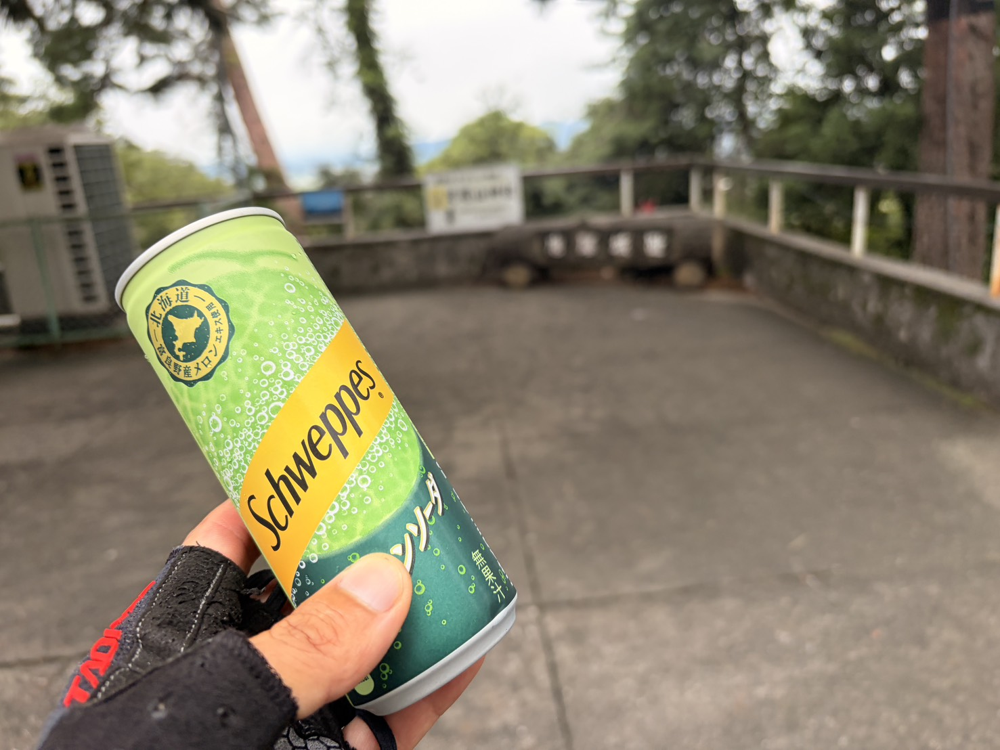
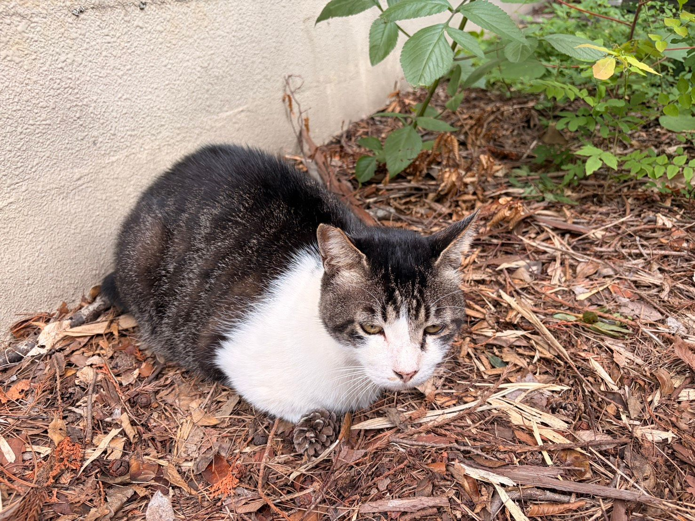

1か月ぶりに友人と唐沢5本。今日はパワーを追わない日
今日は友人と唐沢へ。お互いの予定がなかなか合わなかったり、走ろうと思った日に雨が降ったりして、気づけば一緒に走るのは1か月くらいぶりになっていた。
昨日も本当は一緒に走る予定だったのだが天気の都合で流れ、私は40分ほどアクティブレスト。今日は天気も大丈夫そうだったので、改めて唐沢へ行ってきた。

32.48km・2時間06分・獲得673m
- 全体32.48km / 2時間06分44秒 / 獲得673m / 運動負荷52
- 負荷平均107W / NP155W / IF0.565 / TSS67.1
- 心拍・回転平均97bpm / 最大132bpm / 平均63rpm
- 効果有酸素TE2.4（ベース）/ 無酸素TE0.0
数字だけ見ると、普段ひとりで唐沢を走っているときとは完全に別物である。心拍はほとんど上がらず、パワーもかなり低め。5本登っているのに、トレーニング効果は「ベース」だった。
今日は「練習」より「一緒に走る日」
最近の唐沢は、ひとりで行くとどうしても練習になる。何Wで登れたとか、前回より速かったとか、最後に350Wをどこまで維持できるか試してみたりとか。
でも今日は最初からそういう日ではない。友人とは走力差もあるので、登りも基本的には会話できるペース。仕事のことや、今の株式市場のことなど、いつも通り他愛のない話をしながら登った。久しぶりに一緒に走ったが、この感じはいつも通りである。
気づけば唐沢を5本
のんびり走っていたとはいえ、終わってみれば唐沢を5本。2時間以上自転車に乗って673m登っているので、何もしていないわけではない。
面白いのは、一昨日と並べたときである。
- 9月4日（ひとり）唐沢2本 / 54分02秒 / 獲得320m / IF0.900 / TSS72.4 / 心拍122bpm
- 今日（友人と）唐沢5本 / 2時間06分44秒 / 獲得673m / IF0.565 / TSS67.1 / 心拍97bpm
時間は2.3倍、獲得標高は2.1倍。それでもTSSは今日の方が低い。同じ山を5本登っても、走り方が違えば身体への負荷はここまで変わる。追い込まずに長く乗る。最近は高強度を入れる日が多いので、こういう時間も悪くない気がする。
山頂でシュウェップス
途中では山頂でシュウェップス。今日は普段の練習ライドとはだいぶ雰囲気が違う。ひとりで来る日は、山頂で止まっても数字を見ているか、次の1本のことを考えているかのどちらかである。
猫。前回は逃げられた

さらに猫もいた。以前ここで猫を見つけたときは完全に警戒されて、写真に残ったのは離れていく後ろ姿だけだった。今日はちゃんと座ったまま撮らせてくれた。近づいてくるわけではないが、逃げもしない。
パワーやタイムばかり見ながら走っていると、こういうものを見つけても素通りしがちである。今日は登って、話して、下って、また登る。そんなことを繰り返していたら5本終わっていた。
毎回追い込む必要はない
富士ヒルでゴールドを目指している以上、もちろん強くなるための練習は続ける。SSTもやるし、短時間の高出力もやるし、最近は350W付近をどこまで維持できるかという練習もしている。
でも、自転車に乗る理由が全部トレーニングになってしまうのも少し違う。友人と久しぶりに会って、仕事や株の話をしながらいつもの山を登る。結果として2時間走って、獲得標高673m、TSS67.1。こういう日も、富士ヒルまでの積み重ねの一つということでいいだろう。
今日は久しぶりに「練習した」というより、普通に自転車に乗って楽しかった日だった。